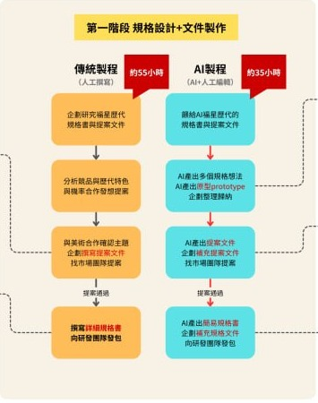
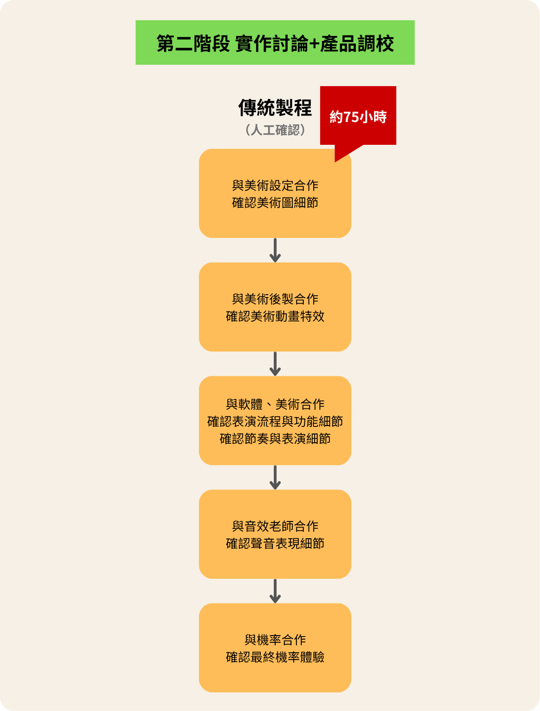
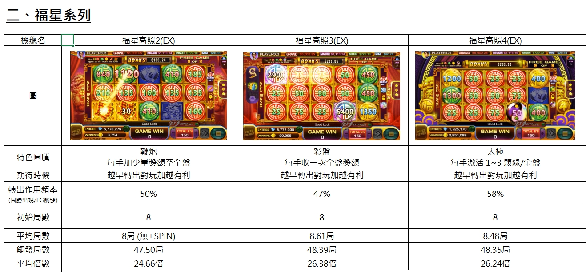
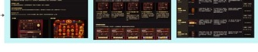
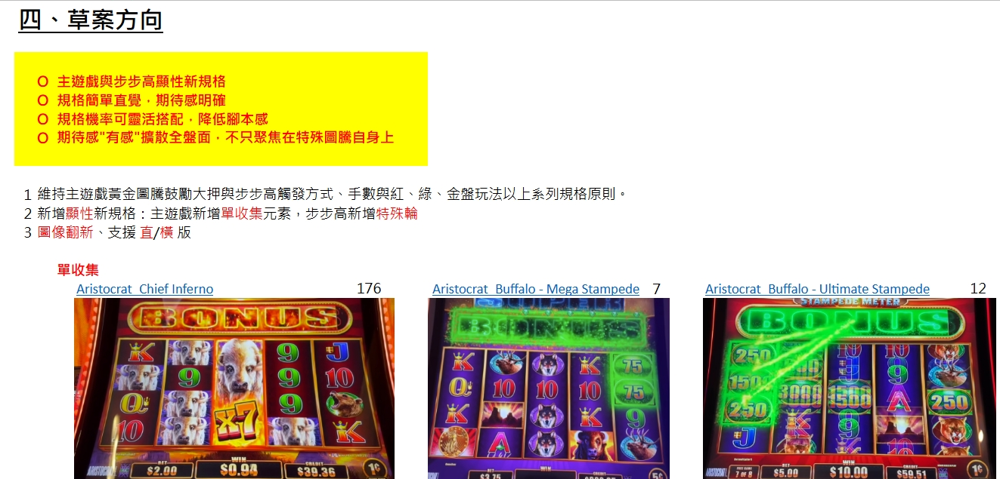
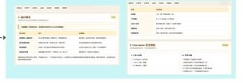

Process Analysis · v2026.06.24.1145
人工與 AI 製程差異報告
本版聚焦「每個流程怎麼從人工做法轉成 AI 輔助做法」，並搭配人工文件與 AI 產出範例圖，最後收斂節省時間與後續優化方向。
傳統人工130.5 小時
目前 AI 輔助109.75 小時
優化後目標74.9 小時
更新時間：2026-06-24 11:45來源：原始流程圖＋製程分析報告
研四部門・老虎機企劃製程分析1 / 7
Overview
整體流程：AI 先產初稿，企劃負責驗證與決策


報告主軸：AI 不是取代企劃判斷，而是先處理資料整理、初稿、示意圖與文件格式化，讓企劃時間集中在驗證、攻防與品質收斂。
研四部門・老虎機企劃製程分析2 / 7
Flow 01
流程 1：玩法發想與競品研究
人工製程約 11.5 小時
人工先看影片、比對競品，再整理成可討論資料
- 逐款搜尋競品影片與規則。
- 人工判讀玩法特色與市場方向。
- 再整理成競品拆解、創新方向與主題包裝內容。
AI 製程約 7.8 小時
AI 先產競品拆解與方向草稿，企劃再驗證
- AI 先整理競品拆解、玩法特色與主題方向。
- 企劃再確認正確性、補足市場判斷。
- 可把空白發想時間轉為快速篩選與取捨。
文件附圖
人工競品整理範例 AI 競品/規格產出範例


節省重點：競品研究、創新設計、主題包裝由人工查找改為 AI 先整理，後續優化可放在 reference 品質與驗證流程。
研四部門・老虎機企劃製程分析3 / 7
Flow 02
流程 2：提案文件與策略來源
人工製程約 11 小時
人工把策略、玩法、畫面示意逐項拼成提案
- 人工整理市場策略來源與提案文字。
- 玩法規格、畫面示意與會議說明需要多次補充。
- 原型製作過去不是企劃可獨立完成的工作。
AI 製程約 9.4 小時
AI 產初版提案、畫面示意與可討論原型
- AI 先生成策略草稿、玩法規格與示意圖。
- 複雜功能可先產可玩原型，讓討論有具體畫面。
- 企劃再補足取捨、風險與正式提案語言。
文件附圖
人工提案/規格整理範例 AI 原型介面範例 AI 文件產出範例


節省重點：提案不再從空白開始；未來可進一步優化圖像精準度、原型品質與提案通過率。
研四部門・老虎機企劃製程分析4 / 7
Flow 03
流程 3：規格書與跨職能需求文件
人工製程約 29 小時
人工整理流程圖、規格說明、表演流程與美術/聲音需求
- 流程圖、規格說明、表演流程各自需要人工整理。
- 美術需求與聲音需求容易受原型品質與描述精準度影響。
- 發包與腳本會議仍需企劃口頭補充背景。
AI 製程約 14.55 小時
AI 先輸出規格框架，再由企劃做正確性校準
- AI 可快速產流程圖、規格說明與 info/多國初稿。
- 美術/聲音需求可先生成骨架，再由企劃精修。
- 跨職能溝通可用同一份規格源頭減少重複說明。
文件附圖
AI 規格文件範例 AI 規格/競品頁面範例
節省重點：規格書製作是目前最能放大 AI 產能的區塊；未來優化在規格文案、流程畫面、美術與聲音需求精準度。
研四部門・老虎機企劃製程分析5 / 7
Flow 04
流程 4：實作討論與產品調校
人工製程約 76 小時
第二階段仍以人工判斷、跨職能協作與調校為主
- 美術圖、後製特效、版本節奏需要長時間討論。
- DEMO、真金體驗、機率定版仍仰賴人員經驗。
- KPI 會議文件需要整理成主管可讀報告。
AI 製程約 74 小時
AI 目前僅部分支援，未來以流程優化為主
- 目前 AI 對第二階段直接節省有限。
- 可協助整理會議資料、KPI 報告與版本調整紀錄。
- 更大的節省來自會議精簡、人員能力與資料整理自動化。
文件附圖
第二階段實作討論流程
節省重點：第二階段目前只節省 2 小時，但優化後可再省 25 小時，是下一輪改善重點。
研四部門・老虎機企劃製程分析6 / 7
Time Saving / Next Optimization
AI 製程節省時間與後續優化方向
傳統人工總工時130.5 小時
目前 AI 輔助總工時109.75 小時目前已節省 20.75 小時
優化後目標總工時74.9 小時總節省 55.6 小時 / 42.6%
第一階段文件製作54.5 → 35.75 → 25.9 小時
優化後總節省 28.6 小時。
第二階段實作討論76 → 74 → 49 小時
優化後總節省 27 小時。
提升產出精準度
圖像示意、規格文案、流程畫面、美術需求與聲音需求仍需要提高準確度。
精簡討論流程
DEMO 會議、真金體驗、機率定版可用 AI 整理議題、紀錄差異與追蹤決議。
建立可重用模板
把競品拆解、提案、規格書、KPI 報告固定成模板，提高每次產出品質。
結論：AI 製程把「初稿產出、文件整理、原型具象化」變成企劃日常流程，讓企劃把時間集中在判斷與品質收斂。
研四部門・老虎機企劃製程分析7 / 7